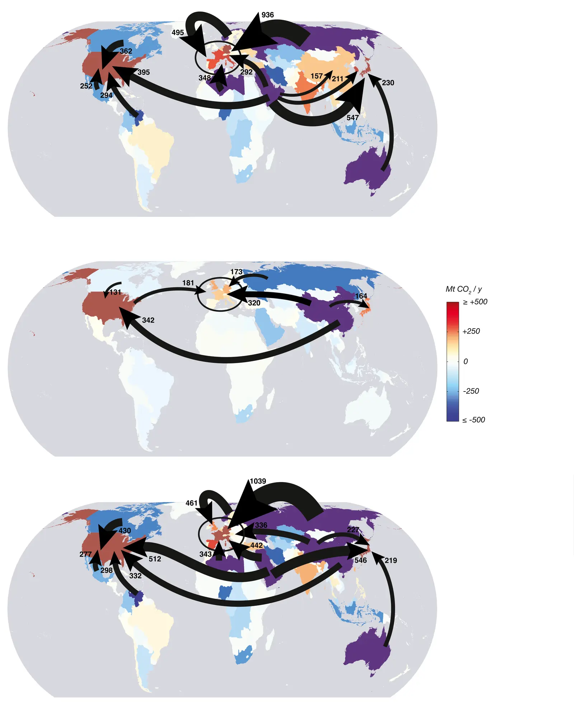

The supply chain of CO2 emissions
Key finding. Across the full supply chain of global CO2 emissions, 10.2 billion tonnes of CO2 — 37 per cent of global emissions — come from fossil fuels traded internationally, and a further 6.4 billion tonnes, or 23 per cent, are embodied in traded goods.

What question did this paper ask?
Emissions are conventionally attributed to where fuel is burned. But that is one point in a chain — the fuel was extracted somewhere, refined somewhere, burned somewhere, and used to make something consumed somewhere else.
This paper asked what the emissions inventory looks like across the entire supply chain at once, and what that implies about where a carbon price could most effectively be applied.
What did we find?
The study builds a consistent set of carbon inventories spanning extraction, production, and consumption, so the same emissions can be traced from the wellhead through to the final consumer rather than counted at a single point.
Fossil fuels crossing a border before being burned account for 37 per cent of global emissions; goods crossing a border after being made with fossil energy account for a further 23 per cent.
If a consistent and unavoidable price were imposed on CO2 anywhere along the supply chain, every party along that chain would have an incentive to be the one imposing it, in order to collect the resulting tax revenue or permit payments.
Carbon-based fuels are geographically concentrated and relatively few parties extract and refine them, which suggests that regulation at the wellhead, mine mouth, or refinery would involve far fewer regulated entities than regulation at the point of combustion or consumption.
Why does it matter?
The practical conclusion is administrative rather than moral. Whatever one concludes about responsibility, the number of parties that must be regulated is smallest upstream, and that is a strong argument for pricing carbon where it is extracted.
The observation about incentives is unusual and worth restating: because the party imposing the price captures the revenue, upstream carbon pricing has a constituency in favour of it rather than only against it.
Citation, data, and code
Steven J. Davis, Glen P. Peters, and Ken Caldeira (2011). The supply chain of CO2 emissions. Proceedings of the National Academy of Sciences 108, 18554-18559.